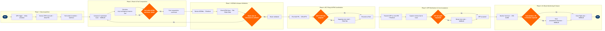

Operational Flight Plan Management
Flight Operations › Flight Dispatch & Control · 18 L4 steps · 6 phases · 4 decision gates · Updated 2026-10-01 20:52
📊
Process Flow Diagram (BPMN)

📋
L4 Process Steps
| Step | Step Name | Role / Swim Lane | System | Input | Output | KPI | Dec? | Exc? |
|---|---|---|---|---|---|---|---|---|
Phase 1 1.1 |
Receive OFP computation trigger from schedule | Flight Dispatcher | Amadeus Altéa PSS | Confirmed flight schedule event (STD, flight number, aircraft registration) published by network scheduling system | OFP computation job queued in flight planning system with flight parameters loaded | OFP computation initiated ≥3 hrs before STD; 100% of flights have confirmed OFP before T-90 min | N | N |
| 1.2 | Extract aircraft type, reg, and ZFW estimate | Load Control Analyst | Amadeus Altéa PSS | Flight number, STD, aircraft registration, confirmed bookings, preliminary cargo manifest | Aircraft type/registration confirmed, preliminary PAX count, planned Zero Fuel Weight (ZFW) estimate | Preliminary ZFW within ±2% of final ZFW to ensure accurate early fuel computation | N | N |
| 1.3 | Pull upper-wind, weather, and SIGMET data | Flight Dispatcher | Honeywell GoDirect Weather | Route waypoints, planned flight levels, estimated departure time | Upper-wind grid data (GRIB2), active SIGMETs/AIRMETs, convective forecast and icing outlook along planned route | Weather data refresh cycle ≤1 hr before STD; SIGMET coverage 100% of planned route corridor | N | N |
Phase 2 2.1 |
Compute CI-optimised route — NAVBLUE | Flight Dispatcher | NAVBLUE | O&D city pair, aircraft performance model, upper-wind GRIB2 data, airline cost index (CI) policy | Optimised ICAO route string, estimated time en route (ETE), planned FL step-climb profile, preliminary trip fuel | Fuel saving vs. fixed routing ≥1.2% per flight; cost index adherence to fleet policy (CI 20–35 narrow-body); computation time ≤90 sec | N | N |
| 2.2 | Calculate trip, contingency, alternate, and reserve fuel | Flight Dispatcher | NAVBLUE | NAVBLUE trip fuel output, alternate aerodrome distance and forecast, contingency policy (5% or fixed-minute rule), company extra fuel policy | Full fuel breakdown: trip fuel, contingency fuel, alternate fuel, final reserve (30-min FAR 121 / ICAO Annex 6), additional company fuel, total fuel order (kg) | Actual vs. planned fuel burn variance ≤±3%; zero-fuel-on-arrival (ZFOA) rate <0.1% of flights | N | N |
| 2.3 | Validate fuel order within MTOW and structural limits | Flight Dispatcher | NAVBLUE + Amadeus Altéa PSS | Total fuel order (kg), ZFW estimate from Altéa, aircraft MTOW for registration and airport elevation/temperature | Go/no-go decision for current routing; if MTOW exceeded, payload reduction request issued to Load Control or route adjusted to reduce trip fuel | MTOW exceedance rate 0% (hard regulatory limit); fuel reduction iteration cycles ≤2 per flight before escalation | Y | Y |
Phase 3 3.1 |
Filter and review NOTAMs for route and aerodromes | Flight Dispatcher | Jeppesen FliteDeck | Route waypoints, departure/destination/alternate ICAO codes, ETD | Filtered NOTAM briefing package with operationally significant NOTAMs highlighted; ILS/approach procedure NOTAMs and runway closure NOTAMs flagged for captain attention | Dispatcher NOTAM review time ≤8 min per flight; Type I/II NOTAM inclusion rate 100% | N | N |
| 3.2 | Check ATFM flow programmes and special use airspace | Flight Dispatcher | FAA TFMS (Traffic Flow Management System) / EUROCONTROL CFMU NM | Filed route string, ETD, altitude profile, departure airport capacity programme status | Active Ground Delay Programmes (GDPs), Ground Stops (GS), Airspace Flow Programmes (AFP) applicable to flight identified; special use airspace (SUA/TFR) conflicts on route assessed | ATFM programme impact assessment completed ≥2 hr before STD; SUA conflict detection rate 100% | N | N |
| 3.3 | Validate route is clear of restrictions and ATFM conflicts | Flight Dispatcher | FAA TFMS + NAVBLUE | NOTAM flags, SUA/TFR overlap results, applicable GDP/AFP programme constraints | Route approved or rerouted alternative generated; if rerouted, OFP recomputed from step 2.1 | Reroute rate due to late SUA/flow conflicts <2% of flights; reroute cycle time (detection to new FPL) ≤12 min | Y | Y |
Phase 4 4.1 |
File ICAO FPL with ATC via SITA AFTN datalink | Flight Dispatcher | SITA ACARS / NAVBLUE FPL Filing | Completed OFP route string, ETD, ICAO equipment suffix, SELCAL code, aircraft registration, crew identifiers | ICAO FPL (format per ICAO Doc 4444 PANS-ATM) transmitted to ATC; ACK or CHG response received and logged | FPL filed ≥60 min before STD (FAR 91.169 / ICAO Annex 2 requirement); FPL acceptance rate (ACK without CHG) ≥94% | N | N |
| 4.2 | Assess EDCT/CTOT slot assignment from ATFM authority | Flight Dispatcher | FAA TFMS / EUROCONTROL CFMU NM Portal | Filed FPL, active GDP/AFP programme data, departure airport acceptance rate | EDCT (Expect Departure Clearance Time) or CTOT issued and recorded; or no-restriction confirmation logged | EDCT compliance rate ≥98%; average ATFM delay per affected flight <8 min | Y | Y |
| 4.3 | Negotiate slot relief or reroute via AOC coordination | Flight Dispatcher / AOC Representative | FAA TFMS Flight Schedule Monitor (FSM) + EUROCONTROL CFMU NM Portal | Assigned EDCT/CTOT, crew duty time remaining, downstream connection passenger count, slot swap availability | Slot swap approval or alternate routing clearance granted; updated ETD recorded on OFP; crew notified via ACARS | Slot relief request success rate ≥30% of attempts; crew duty limit infringement due to ATFM delay <0.5% of flights | N | Y |
Phase 5 5.1 |
Generate and transmit OFP package to crew EFB | Flight Dispatcher | NAVBLUE + Jeppesen FliteDeck (EFB) | Finalised OFP, fuel order, NOTAM briefing package, weather package, current ATIS | Complete OFP briefing packet transmitted to crew EFB via ACARS datalink; delivery acknowledgement logged | OFP delivery to EFB ≥T-60 min before STD; datalink transmission success rate ≥99.5% | N | N |
| 5.2 | Captain reviews OFP fuel, route, and alternates on EFB | Captain (Pilot-in-Command) | Jeppesen FliteDeck (EFB) | OFP package including fuel breakdown, route, alternates, NOTAM briefing, weather charts | Captain review complete; fuel acceptance confirmed or additional fuel request raised with dispatcher | Captain OFP review time ≤15 min; OFP acceptance without fuel change ≥82% of flights | N | N |
| 5.3 | Resolve captain commander's discretion fuel request | Captain / Flight Dispatcher | Jeppesen FliteDeck (EFB) + NAVBLUE | Captain's discretionary fuel request (kg), current planned fuel breakdown, MTOW headroom, ramp fuel availability | Agreed final fuel quantity; revised fuel order transmitted to ramp fuelling team; updated TOW confirmed within MTOW | Commander's discretion fuel (CDF) additions >200 kg rate <18% of flights; MTOW exceedance from CDF uplift 0% | Y | Y |
Phase 6 6.1 |
Monitor en-route fuel burn via ACARS position reports | Flight Dispatcher | SITA ACARS + NAVBLUE | ACARS ADS-C/ADS-B position reports with fuel on board (FOB) transmission, OFP fuel plan profile | Real-time fuel burn comparison vs. OFP plan; trend line for fuel state at destination and alternate | Fuel monitoring update interval ≤15 min oceanic / ≤5 min domestic; fuel deviation alert threshold ±5% of plan | N | N |
| 6.2 | Assess fuel deviation and issue diversion recommendation | Flight Dispatcher | NAVBLUE + SITA ACARS | ACARS FOB report, computed fuel remaining from OFP, alternate fuel requirement, destination weather update | Continue-as-planned confirmation or fuel advisory message to crew; diversion recommendation issued if destination fuel falls below alternate + final reserve requirement | Fuel emergency declaration rate (MAYDAY FUEL / PAN PAN FUEL) <0.01% of flights; diversion for fuel exhaustion <0.05% of flights | N | Y |
| 6.3 | Close flight plan and record actuals in data lake | Flight Dispatcher | NAVBLUE + Amadeus Altéa PSS + AWS Redshift | ACARS actual time of arrival (ATA), final fuel on board at blocks-on, en-route amendment log, uplift confirmation | Flight plan closed with ATC; actual fuel burn, block time, and route deviations recorded in airline data lake for performance analytics | Flight plan closure within 30 min of ATA (ICAO Doc 4444 requirement); fuel burn data capture rate 100% for post-flight analytics | N | N |
📋